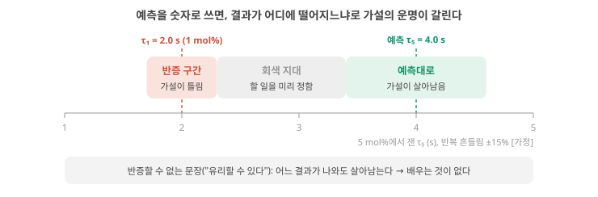

Day 53. 검증할 수 있는 가설의 모양: 반증 가능성, 두 사슬과 고리 믿음, 빈칸에서 후보 꺼내기
Phase 5 · 나는 무엇을 연구해야 하는가
이번 질문 가설은 관찰·주제·목표와 무엇이 다르고, '틀렸다면 무엇이 관측되나'를 숫자로 어떻게 적나? 가설 하나에 붙는 두 사슬(왜 필요한가 / 왜 그렇게 되는가)의 가장 약한 고리는 믿음의 곱과 조건부 믿음으로 어떻게 찾고, 후보는 앞 Day들의 빈칸에서 어떻게 꺼내나?
왜 배우나 연구 질문을 틀릴 수 있는 문장과 반증 숫자로 바꿔 Day 57–58 결정에 쓴다.
오늘의 장면 앞 Day 빈칸 → 질문 → 가설 → 두 사슬에 p를 매겨 곱함 → 예측·반증 구간·약한 고리
오늘 반드시 가설은 무엇을 같게 둔 채 어떤 숫자가 나오면 틀리는지 말한다(τ₅ 예측 4.0 s, 반증 1.7–2.3 s). 가장 약한 고리부터 시험한다.
나중에 봐도 됨 포퍼·영상 · 조건부 믿음 계산 · Singh 2026 Fig. 2 · 내 가설 쓰기
넘어가는 기준 '오늘 반드시'를 내 말로 말할 수 있으면 충분합니다.
이후 쓰이는 곳 Day 55–56 약한 고리 최소 실험 · Day 57–58 한다/접는다 결정
지난 학습 복습
지난 학습 단위(Day 52 · readout·전원·안전, 그리고 이길 수 있는 문제)의 핵심을 다른 예로 확인합니다. 고르는 즉시 맞았는지와 이유가 보입니다. 틀려도 아래 학습자료는 그대로 열려 있고, 틀린 문제에는 다시 볼 곳이 붙습니다.
사전 테스트 (선택)
사전 테스트 펼치기 · 배우기 전에 짐작해 보는 문제 (선택)
학습자료
Phase 5의 넷째 Day입니다. Day 47–48에서 이 분야가 무엇을 입증했고 무엇이 비어 있는지(표 전체의 패턴: 입증된 것과 아직인 것), Day 49–50에서 실용화를 막는 병목이 무엇인지(병목의 계층), Day 51–52에서 고분자 이온 소재가 경쟁할 수 있을지 모르는 자리가 어디인지(그래서 고분자 이온 소재가 이길 수 있는 문제는) 봤습니다. 이제 질문이 처음으로 나를 향합니다. 내가 고분자 설계로 검증할 수 있는 가장 중요한 가설은 무엇인가?
이번 자료는 이 질문의 답을 주지 않습니다. 답은 내 소재, 내 장비, 내 관심으로만 정할 수 있고, 아직 구조·응용(application)·과제(task)를 정하지 않았다면 정해지지 않은 것이 정상입니다. 내 답 양식에 쓰는 것은 선택이고, 지금은 예시 후보 하나로 방법을 따라가도 충분합니다. ★ 이 자료가 주는 것은 답을 고르는 방법과 판단 기준입니다. 가설이 무엇이고, 좋은 가설에는 어떤 사슬이 붙어야 하며, 후보를 어디서 꺼내 어떤 체로 거르고, 어떤 함정을 피해 하나를 고르는가. 예시로 드는 후보 다섯 개(A–E)는 그 방법을 보이기 위한 재료입니다. 그중 하나는 사용자의 연구 맥락(폴리전해질(polyelectrolyte) 이종접합, 이온 다이오드, 고갈층)에 가깝게 골랐지만, 그것도 예시일 뿐입니다.
이 주제의 질문 순서 — 이번 Day 53에서는 구간 1–3만 읽습니다. 나머지는 Day 54에서 이어집니다(구간 번호는 원래 한 묶음이던 순서 그대로입니다).
- 가설은 관찰·주제·목표와 무엇이 다른가? "틀릴 수 있다"는 것이 왜 장점인가? → 구간 1
- 좋은 가설에 붙어야 하는 두 사슬, "왜 필요한가"와 "왜 그렇게 되는가"는 무엇인가? 사슬의 가장 약한 고리는 어떻게 찾나? → 구간 2
- 후보는 어디서 꺼내나? Day 37–52의 빈칸을 가설로 바꾸는 절차는? → 구간 3
- 후보를 어떤 체로 거르나? 관문과 점수는 왜 따로 봐야 하나? (Day 54에서)
- 흔한 함정(반증할 수 없는 문장, 시연을 가설로 착각, 교란변수, 크기에 묻히는 손잡이)은 무엇이고 어떻게 피하나? (Day 54에서)
- 그래서 "가장 중요한" 하나는 어떻게 고르나? (Day 54에서)
1. 가설이란 무엇인가: 관찰·주제·목표·가설·예측
상황. 연구 계획서에 "MNIST 95%를 달성한다"와 "가교제를 늘리면 τ가 길어진다"가 나란히 적혀 있습니다. 실험 결과 하나로 틀렸다고 판정할 수 있는 문장은 어느 쪽일까요? 이 구간은 그 차이를 문장 종류로 가르는 연습입니다.
끝나면 할 수 있는 것. 관찰·연구 주제·목표·가설·예측을 예문으로 구별하고, 한 문장짜리 가설이 "틀렸다면 무엇이 관측될지"를 말할 수 있는지(반증 가능성) 판정할 수 있다.
왜 필요한가. Day 57–58에서는 "이 연구를 한다 / 좁혀서 한다 / 접는다"를 결정합니다. 그런데 "이온 고분자로 뉴로모픽 device를 연구한다"는 문장으로는 아무것도 결정할 수 없습니다. 어떤 실험 결과가 나와도 그 문장은 그대로 서 있기 때문입니다. 결정을 하려면 실험 결과에 따라 참과 거짓이 갈리는 문장이 있어야 합니다. 그것이 가설입니다.
예문에 나오는 양 세 가지. 아래 예문들은 앞 Day에서 배운 양을 씁니다. 확산계수 \(D\)는 이온이 농도 차를 따라 퍼지는 빠르기(단위 m²/s)이고, 이완 시간 τ는 펄스를 준 뒤 응답이 원래 값으로 돌아가는 데 걸리는 시간의 척도(단위 s)입니다. ★ 두께 \(L\)인 층을 이온이 확산으로 가로지르는 시간은 대략 \(\tau \sim L^2/D\)로, 두께의 제곱에 비례하고 \(D\)에 반비례합니다(확산 시간). 사슬 운동성은 고분자 사슬 조각이 얼마나 자유롭게 움직이는가이고, 사슬끼리 묶는 가교(crosslink)를 늘리면 대개 줄어듭니다(Tg와 사슬 운동성). 기호 주의: 이 Day에서 기울인 \(D\)는 확산계수이고, 뒤의 후보 절부터 나오는 굵은 D는 예시 후보의 이름, 'Day 39–40'처럼 숫자가 붙은 것은 Day 번호입니다. Day 15–16·Day 23–24에서 한 단계에 남는 비율로 쓴 \(d\)와도 다른 양입니다.
가설·예측·반증 가능성: 결과에 따라 운명이 갈리는 문장
다섯 가지 문장. 연구 계획서에 흔히 섞여 나오는 문장을 종류별로 나눠 봅니다. 예문은 모두 이 교재가 만든 것입니다.
| 종류 | 예문 | 무엇인가 | 실험으로 틀릴 수 있나 |
|---|---|---|---|
| 관찰(observation) | "우리 이온겔의 이온전도도는 1 mS/cm다." | 이미 잰 사실 | 다시 재면 확인될 뿐 |
| 연구 주제(research topic) | "이온 고분자로 뉴로모픽 device를 연구한다." | 관심 영역 | 아니요 |
| 목표(goal)·시연(demonstration) | "MNIST 정확도 95%를 달성한다." | 이루고 싶은 숫자 | 달성/미달은 갈리지만, 왜 그런지는 말하지 않는다 |
| 가설 | "가교제를 늘리면 사슬 운동성이 줄어 이온 확산계수 \(D\)가 줄고, 그래서 이완 시간 τ가 길어진다." | 원인 → 메커니즘 → 결과의 주장 | 예 |
| 예측 | "두께를 같게 두고 가교제를 1 → 5 mol%로 늘리면, \(D\)가 절반이 될 때 τ는 약 2배가 된다." | 가설이 참이면 특정 측정에서 나올 숫자 | 예, 숫자로 |
가설(hypothesis)은 "무엇을 바꾸면 무엇이, 왜 바뀌는가"를 한 문장으로 주장하는 것입니다. 원인(가교제), 메커니즘(사슬 운동성 → \(D\)), 결과(τ)가 다 들어 있습니다. 예측(prediction)은 그 가설이 참이라면 어떤 실험에서 어떤 숫자가 나와야 하는지를 적은 것입니다. 가설은 직접 잴 수 없는 메커니즘을 품고 있지만, 예측은 잴 수 있습니다.
반증 가능성(falsifiability)은 "이 가설이 틀렸다면 무엇이 관측될지 미리 말할 수 있는가"입니다. 위 예에서는 "\(D\)가 절반이 되었는데도 τ가 측정 오차 안에서 그대로"가 관측되면 가설이 틀렸습니다. 이 말을 할 수 있으면 반증 가능한 가설이고, 할 수 없으면 아무리 그럴듯해도 검증할 수 없는 문장입니다. 이 기준은 과학철학자 칼 포퍼가 『과학적 발견의 논리』(독일어판 1934, 판권면 표기 1935 / 영어판 1959)에서 정리한 것입니다. 포퍼는 한 번 엇나간 결과가 아니라 다시 해도 나오는(재현되는) 결과가 이론과 어긋날 때 그 이론을 반증된 것으로 보자고 했습니다. 아래 예에서 τ를 device 여러 개로 재고, 반복 흔들림(±15%)을 판정 전에 먼저 정하는 이유가 이것입니다. 확인 출판 연도와 '재현되는 결과' 문장은 Wikipedia "The Logic of Scientific Discovery"(2026-10-25 열람)가 인용한 영어판 p.66으로 확인. 원전은 폴더에 없어 직접 대조하지 않음
왜 "틀릴 수 있다"가 장점인가. 어떤 결과가 나와도 살아남는 문장은 아무 정보도 주지 않습니다. "이온 device는 뉴로모픽에 유리할 수 있다"는 실험이 실패해도 "아직 최적화가 덜 됐다"로, 성공해도 "역시 유리하다"로 읽힙니다. 반대로 "τ가 2배가 된다"는 문장은 실험 하나로 쓰러질 수 있고, 그래서 살아남으면 무언가를 말해 줍니다. 좋은 가설은 쉽게 죽을 수 있게 생긴 가설입니다.
작은 숫자로 따라가기. 위의 가교 가설을 예측과 반증 조건까지 바꿔 봅니다. 앞에서 되짚은 확산 시간 어림식 \(\tau \sim L^2/D\)를 씁니다.
단계 1 — 가설을 잴 수 있는 양으로. 가설의 말들을 측정량으로 바꿉니다. "사슬 운동성"은 직접 재기 어렵지만, 그 결과인 \(D\)는 이온전도도와 이온 농도에서 어림할 수 있고(Day 43–44의 \(\sigma = n q \mu\)와 이동도–확산계수 관계, 이온전도도 σ = Σ n·|z|e·µ 와 계산 기능의 관계), τ는 펄스 뒤 전류가 돌아오는 곡선에서 맞춥니다. 두께 \(L\)은 재서 고정합니다.
단계 2 — 예측을 숫자로. \(L\)이 같다면 \(\tau \propto 1/D\)입니다. 가교제 1 mol%에서 \(D_1\), τ₁ = 2.0 s였고 5 mol%에서 \(D_5 = 0.5\,D_1\)로 재졌다면, 가설의 예측은 τ₅ ≈ 2.0 s × (\(D_1/D_5\)) = 2.0 × 2 = 4.0 s입니다.
단계 3 — 반증 조건을 미리. 같은 조건 반복에서 τ가 ±15% 흔들린다고 합시다(device 여러 개로 잰 값이라고 가정). 그러면 "τ₅가 1.7–2.3 s(τ₁의 ±15% 안)"이면 가설이 틀렸다고 판정합니다. \(D\)는 반으로 줄었는데 τ가 움직이지 않았다는 뜻이고, τ를 정하는 것이 \(D\)가 아니라는 뜻입니다.
단계 4 — 대안 설명을 적어 둔다. τ₅가 4 s 근처로 나와도 가설이 "증명"된 것은 아닙니다. 가교제를 늘린 시료가 더 두껍게 만들어졌거나, 함수율(water content, 겔이 머금은 물의 비율)이 함께 줄었다면 같은 결과가 나옵니다. 이런 "함께 움직인 다른 원인"이 교란변수입니다(가교제와 함수율의 예는 뒤의 함정 절에서 숫자로 풉니다). 그래서 예측에는 늘 "무엇을 같게 둔 채로"를 붙입니다.
판정되지 않는 회색 지대. 이 예에서 예측(4.0 s)과 반증 구간(1.7–2.3 s) 사이에는 넓은 회색 지대가 남습니다. 예측 4.0 s에도 같은 ±15% 흔들림을 붙이면 '예측대로'인 구간은 3.4–4.6 s이고, 그 사이의 2.3–3.4 s는 어느 쪽으로도 판정되지 않습니다. 그 지대에 결과가 떨어지면 무엇을 할지도 미리 정해야 하는데, 그것이 Day 55–56의 "세 구간"(결과를 보기 전에 적어 두는 성공·모호·기각의 범위)입니다. 그림 1에서는 결과 τ₅가 세 띠 가운데 어디에 떨어지느냐만 보세요.

"좋은 가설은 맞는 가설이다" — 연구를 시작하는 시점에는 어느 가설이 맞는지 모릅니다. 좋은 가설은 결과가 어느 쪽으로 나와도 무엇을 배우는 가설입니다. 틀린 것으로 판정되어 방향을 바꾸게 해 준 가설은 실패가 아니라 제 일을 한 것입니다. 반대로 어떤 결과도 버틸 수 있게 만든 문장("가능성을 보인다", "유리할 수 있다")은 살아남지만 아무것도 결정해 주지 않습니다.
- 가설 (hypothesis)
- 무엇을 바꾸면 무엇이, 왜 바뀌는가를 한 문장으로 한 주장. 원인·메커니즘·결과를 담는다.
- 예측 (prediction)
- 가설이 참이면 특정 측정에서 나와야 하는 숫자. "무엇을 같게 둔 채로"를 함께 적는다.
- 반증 가능성 (falsifiability)
- 틀렸다면 무엇이 관측될지 미리 말할 수 있는 성질. 이것이 없으면 검증할 수 없다.
- 관찰(이미 잰 사실), 주제(관심 영역), 목표(이루고 싶은 숫자), 가설(원인 → 메커니즘 → 결과), 예측(가설이 참이면 나올 숫자)은 다르다.
- 반증 가능성 = 틀렸을 때 관측될 결과를 미리 말할 수 있음. 예: \(D\)가 절반인데 τ가 ±15% 안이면 "τ는 \(D\)가 정한다"는 가설은 틀렸다.
- 예측에는 "무엇을 같게 둔 채로"를 붙인다(두께·함수율). 같게 두지 않으면 다른 원인이 같은 결과를 낸다.
- 좋은 가설은 쉽게 죽을 수 있게 생겼고, 어느 쪽 결과에서도 무언가를 배운다.
2. 두 사슬: "왜 필요한가"와 "왜 그렇게 되는가"
이 구간을 읽고 나면 가설 하나에 붙는 두 사슬(응용 → 요구 → 병목 → 필요한 값 / 설계 손잡이 → 이온 동역학 → device 응답 → 계산 지표)을 직접 그리고, 고리마다 근거 상태를 표시해 가장 약한 고리를 찾을 수 있다.
왜 사슬인가. 앞에서 본 가교 가설은 반증 가능하지만, 한 가지가 빠져 있습니다. 그 τ가 길어지면 누구에게 좋은가? 반대로 "몸 안 심전도 장치는 수년을 버텨야 한다"는 문장은 중요하지만, 고분자로 무엇을 바꾸면 그렇게 되는가가 없습니다. 연구 가설은 이 둘을 잇는 자리에 있어야 합니다. 내 답 양식의 안내문도 같은 말을 합니다. 두 사슬 중 하나라도 빠지면 후보가 아니라 희망사항입니다.
그림부터. 그림 2는 예시 가설 하나에 두 사슬을 그린 것입니다. 그림에 나오는 두 낱말을 먼저 되짚습니다. 물리 reservoir computing(RC)은 고정된 물리계(여기서는 이온 device)가 입력 이력을 내부 상태로 바꾸고, 그 상태에 weight를 곱해 더하는 마지막 층인 readout만 데이터로 학습하는 방식이었습니다(reservoir 상태, ridge). Device가 변하면 같은 readout이 더 이상 맞지 않아 다시 학습해야 합니다.
그림의 예는 피부 위 심전도 패치(Day 51–52)를 응용으로, 이온겔의 drift(시간이 지나며 응답이 조금씩 변하는 것, device 편차·잡음·장기 안정성과 그 측정)를 병목으로 잡았습니다.
읽는 법: 왼쪽(주황)은 위에서 아래로 "왜 이것이 필요한가"를, 오른쪽(초록)은 위에서 아래로 "고분자로 무엇을 바꾸면 그렇게 되는가"를 따라갑니다. 두 사슬이 맨 아래 보라 상자, 곧 가설 한 문장으로 모입니다.
고리 옆의 태그와 \(p\)는 그림 바로 아래 기초 상자에서, 그림 맨 아래 글의 '조건부 믿음'은 이 구간 뒤쪽 '곱은 언제 맞나'에서 칸을 세어 설명하니, 지금은 상자 여덟 개의 이름과 위에서 아래로 가는 순서만 보세요.

가설의 두 사슬: 왜 필요한가 / 왜 그렇게 되는가
사슬 ① 왜 필요한가. 응용에서 출발해 가설까지 내려옵니다(그림 2 왼쪽). 응용(누가 쓰나) → 요구(requirement, 그 응용이 device에 요구하는 것) → 병목(지금 그 요구를 못 채우게 막는 것) → 필요한 값(target value, 병목을 풀었다고 말하려면 넘어야 할 숫자). 재료는 Day 49–50의 병목 표와 Day 51–52의 교차표, 그리고 Day마다 적은 병목 장부입니다(병목의 계층, 교차표). Day 51–52의 교차표를 짧게 다시 말하면, 응용이 요구하는 값과 이온 메커니즘이 허용하는 값을 축마다 나란히 놓고 "맞음/모자람/모름"을 판정한 표였습니다. "모자람" 칸이 사슬 ①의 병목이 됩니다.
사슬 ② 왜 그렇게 되는가. 고분자 설계에서 출발해 계산 지표까지 갑니다(그림 2 오른쪽). 설계 손잡이(design knob, 바꿀 화학·구조) → 이온 동역학(ion dynamics, 그 손잡이가 바꾸는 \(D\), 이온 농도, 결합, 고정 전하) → device 응답(device response, τ, 정류비, 응답 크기, 그 흔들림) → 계산 지표(computing metric, memory capacity: 지난 입력을 지연마다 얼마나 되살리는지의 합, Retention time과 memory capacity는 무엇이 다른가 / 시험 데이터 오차: 학습에 쓰지 않은 데이터에서 잰 오차 / 재보정 주기: readout을 다시 학습하지 않고 쓸 수 있는 기간, 재보정 주기(recalibration interval) 계산). 이 사슬은 Day 41–42의 경로 지도(화학구조 → 이온 동역학 → device 응답 → 계산 기능)와 같은 모양입니다(Tg와 사슬 운동성, 화학구조 → 계산 경로 지도). ★ Day 41–42에서 본 대로, 폴더 근거가 있는 화살표는 앞의 둘이고 "device 응답 → 계산 기능"은 폴더의 어느 논문도 정량으로 잇지 않은 빈칸이었습니다.
고리마다 근거 상태. 각 화살표에 태그를 붙입니다. 이 교재가 문장마다 붙여 온 태그와 같은 낱말, 같은 뜻입니다. 확인(폴더 원문이나 식, 또는 그 자리에 적은 출처로 뒷받침), 해석(근거에 기댄 판단), 가설(방향은 주장하지만 아직 시험하지 않은 고리), 미확인(찾아봤지만 근거를 찾지 못해 방향조차 모름. 예: 내 재료로 잰 측정이 폴더 문헌에 없음). 가설과 미확인의 차이는 '어느 쪽일지 근거 있는 짐작이 있느냐'입니다. 태그는 지금 상태만 말합니다. 무엇을 재야 그 고리가 확인으로 바뀌는지(증거의 종류)는 이 구간 뒤쪽의 '고리마다 어떤 증거가 필요한가' 표에서 따로 봅니다. 가설은 이 사슬 가운데 확인이 아닌 고리를 시험하는 일이고, 그중 가장 약한 고리부터 시험하는 것이 가장 경제적입니다.
가장 약한 고리를 숫자로. 각 고리가 성립한다고 내가 믿는 정도, 곧 믿음(degree of belief)을 0–1 사이의 숫자 \(p\)로 적어 봅니다. 믿음 0.8은 "비슷한 상황을 10번 상상하면 그중 8번은 이 고리가 성립한다"로 읽으면 셀 수 있습니다. 작은 예: 고리 둘이 각각 0.8이고 서로 영향을 주지 않는다면, 10번 중 첫 고리가 서는 8번 가운데 다시 8할(6.4번)에서만 둘째 고리도 섭니다. 둘 다 설 믿음은 6.4/10 = 0.8 × 0.8 = 0.64로, 어느 고리 하나(0.8)보다 낮습니다. 이렇게 고리들이 서로 독립이라고 단순하게 가정하면, 사슬 전체가 성립할 정도는 곱입니다.
\[ P_{\text{사슬}} = p_1 \times p_2 \times p_3 \]
- 왜 지금 필요한가: 고리가 여럿이면 하나하나는 그럴듯해도 전체는 약할 수 있다는 것을 숫자로 보기 위해.
- 기호: \(p_i\)는 \(i\)번째 고리에 대한 내 믿음(0–1). 측정한 확률이 아니라 스스로 매긴 값이다.
- 단위: 없음.
- 계산 순서: 고리마다 \(p\)를 적는다 → 곱한다 → 가장 작은 \(p\)의 고리를 표시한다.
- 조건: 곱이 사슬 전체의 믿음과 같아지는 것은 고리들이 서로 독립이라고 볼 때다(한 고리가 서는지가 다른 고리가 서는지에 영향을 주지 않음). 이 단순화가 깨지는 경우(예: 같은 측정 오류가 두 고리를 함께 무너뜨림)와 고치는 법은 이 구간 뒤쪽 '곱은 언제 맞나'에서 칸을 세어 봅니다.
- 결과의 뜻: 곱이 작으면 사슬이 길거나 약한 고리가 있다는 뜻이다. 정밀한 확률이 아니라 어디가 약한지 보이게 하는 장치다. 해석
두 사슬의 숫자를 단계별로.
단계 1 — 사슬 ①의 곱. 응용 → 요구(0.9): 심전도 패치의 readout을 날마다 정답 붙은 데이터로 다시 학습하기는 어렵다는 것은 Day 51–52에서 정리한 판단입니다(weight는 어디서 학습하나, 그리고 소프트웨어는 어디에 필요한가, 해석). 요구 → 병목(0.9): 재학습 없이 쓸 수 있는 기간은 "허용 drift ÷ drift 속도"로 정해진다는 Day 33–34의 식(재보정 주기(recalibration interval) 계산, 확인). 병목 → 필요한 값(0.7): "1주면 쓸 만하다"는 내가 정한 기준(가설). 곱은 0.9 × 0.9 × 0.7 = 0.567.
단계 2 — 사슬 ②의 곱. 손잡이 → 이온 동역학(0.6): 비휘발 용매와 가교가 내 겔의 용매량·\(D\)를 하루 동안 유지할지는 폴더 문헌에서 잰 것을 찾지 못했습니다(미확인). 이온 동역학 → device 응답(0.9): \(D\)가 유지되면 τ도 유지된다는 것은 \(\tau \sim L^2/D\)에서 나옵니다(확인). Device 응답 → 계산 지표(0.6): τ가 덜 변하면 같은 readout이 더 오래 맞는다는 것은 Day 33–34의 모형일 뿐 이 device에서는 재지 않았습니다(가설). 곱은 0.6 × 0.9 × 0.6 = 0.324.
단계 3 — 전체와 가장 약한 고리. 두 사슬이 모두 성립해야 가설이 의미를 가지므로, 두 사슬도 서로 독립이라고 단순화하면 0.567 × 0.324 ≈ 0.18. 고리 여섯 개가 모두 0.6 이상이어도 전체는 0.2가 안 됩니다. 가장 약한 고리는 사슬 ②의 두 고리(0.6)입니다. 그러니 이 가설을 시험한다면 "내 겔의 용매량과 τ가 하루에 얼마나 변하나"부터 잽니다. 이것은 새 소재 없이 기존 device로 할 수 있는 측정이고, Day 55–56의 "가장 싼 실험"이 됩니다.
왜 가장 약한 고리부터인가, 숫자로. 그림 2의 예에서 오른쪽 사슬의 첫 고리(\(p\) = 0.6)를 시험해 성립한다고 확인되면(\(p\)를 1에 가깝게 올리면) 전체는 0.18에서 0.567 × (1 × 0.9 × 0.6) ≈ 0.31로 오릅니다. 같은 수고로 0.9인 고리를 확인하면 0.567 × (0.6 × 1 × 0.6) ≈ 0.20으로 조금 오를 뿐입니다. 반대로 약한 고리가 무너지면 나머지 고리는 잴 필요가 없어집니다. 어느 결과가 나와도 약한 고리에서 가장 많이 배웁니다. 해석
고리 네 개에 각각 0.8을 매겼다면 사슬 전체는 얼마일까요? 0.8보다 클까요, 작을까요? 계산한 뒤 아래 점검으로 확인하세요. 첫 문제는 위 예의 확인, 둘째는 일부 채우기, 셋째는 혼자 풀기입니다.
고리마다 어떤 증거가 필요한가. 태그는 지금 상태이고, 시험 계획에는 그 고리를 확인으로 바꾸려면 무엇을 재야 하나가 필요합니다. 증거는 대략 세 종류입니다. 식(모형)은 이미 아는 관계식이 고리를 보장하는 경우, 직접 측정은 재료나 device의 물리량을 재는 경우, 과제 평가는 학습한 readout으로 계산 성능을 재는 경우입니다. 과제 평가는 Day 10 사다리의 3–5단(학습한 readout, held-out 성능: 학습에 쓰지 않고 남겨 둔 데이터에서 잰 성능, 기준선 비교)에 해당합니다(계산을 검증하는 조건, held-out 성능과 기준선). 예시 사슬 ②를 고분자 손잡이에서 계산 지표까지 한 줄씩 적으면 이렇습니다.
| 고리 (사슬 ②) | 이 고리가 말하는 것 | 필요한 증거의 종류와 재는 법 | 지금 상태 | \(p\) |
|---|---|---|---|---|
| 설계 손잡이 → 이온 동역학 | 비휘발 용매 + 가교 겔은 하루 동안 용매량과 \(D\)가 유지된다 | 직접 측정: 겔 무게(용매 손실)와 이온전도도(→ \(D\), [이온전도도 σ = Σ n· | z | e·µ 와 계산 기능의 관계](d23a.qmd#b-conductivity))를 1주 동안 매일. 휘발 용매 겔을 비교군으로 |
| 이온 동역학 → device 응답 | \(D\)가 유지되면 τ와 응답 크기도 유지된다 | 식 \(\tau \sim L^2/D\)(확산 시간 τ_diff ~ L²/D) + 확인용 직접 측정: 같은 날 펄스 응답에서 τ를 잰다 | 확인 식으로 | 0.9 |
| Device 응답 → 계산 지표 | τ가 덜 변하면 첫날 학습한 readout이 더 오래 맞는다 | 과제 평가: 첫날 학습한 readout을 고정하고 1·3·7일째 held-out 오차를 잰다. 원시 입력 + 같은 readout 기준선도 함께(Day 10 3–5단) | 가설 Day 33–34의 모형뿐 | 0.6 |
사슬이 계산 지표 쪽으로 갈수록 필요한 증거가 비싸집니다(물리량 하나를 재는 일 → 여러 날에 걸친 과제 평가). 내 가설의 사슬에도 고리마다 이 세 칸(말하는 것, 증거의 종류, 지금 상태)을 적으면, 어디서부터 무엇을 잴지가 보입니다. 해석
곱은 언제 맞나: 조건부 믿음과 연쇄 법칙. 지금까지 곱셈은 "고리들이 서로 영향을 주지 않는다"는 가정 위에 있었습니다. 그런데 그 가정이 틀리면 곱이 얼마나 어긋나는지는 칸을 세어 봐야 보입니다. 이 부분은 한 번 따라가 보면 충분하고, 연구 판단에 가져갈 것은 "각 p를 '앞 고리가 섰다고 치면'으로 매긴다" 하나입니다.
지금까지는 고리들이 서로 영향을 주지 않는다고(독립) 보고 곱했습니다. 그런데 실제 고리는 같은 원인으로 함께 무너지기도 합니다. 기초 상자의 '조건'을 앞의 0.8 × 0.8 예처럼 '10번 중 몇 번'으로 세어 풉니다.
앞에서 본 가교 가설을 고리 둘로 나눕니다. 고리 1은 "가교를 늘리면 \(D\)가 준다", 고리 2는 "\(D\)가 줄면 τ가 는다"입니다. 그림 3의 칸 하나가 상상한 경우 하나입니다.

단계 1 — 고리 1을 센다. 10번 중 8번 성립합니다. \(P(1) = 8/10 = 0.8\). 여기서 \(P(\cdot)\)는 "괄호 안의 고리가 성립할 믿음"을 줄여 쓴 것입니다.
단계 2 — 고리 2는 고리 1이 성립한 8번 안에서만 센다. 그 8번 중 7번 성립합니다. \(P(2 \mid 1) = 7/8 = 0.875\). 세로 막대 '|'는 "~가 성립했다고 치면"으로 읽습니다. 이렇게 앞 고리가 성립했다고 놓고 매긴 믿음이 조건부 믿음(확률로는 조건부 확률, conditional probability)입니다.
단계 3 — 둘 다 성립하는 경우. 7번, 곧 0.7이고, 이것은 정확히 \(0.8 \times 0.875\)입니다. 일반 규칙이 연쇄 법칙(chain rule)입니다. \(P(1\text{과 }2) = P(1) \times P(2 \mid 1)\). 고리가 셋이면 \(P(1) \times P(2 \mid 1) \times P(3 \mid 1\text{과 }2)\)처럼, 앞 고리들이 성립했다는 조건을 달고 이어 곱합니다. 말로 하면 "첫 고리가 설 믿음 × 그것이 섰다고 칠 때 둘째가 설 믿음 × …"입니다. 이 곱은 독립 가정 없이 언제나 맞습니다.
단계 4 — 따로 물으면 틀릴 수 있다. 9·10번은 두께를 잘못 잰 경우라고 합시다. 두께는 \(D\) 어림(conductance를 계산할 때 두께가 들어감)과 τ 예측(\(L^2\))에 모두 들어가므로, 두 고리가 함께 무너집니다. 이때 고리 2만 따로 물으면 10번 중 7번, \(P(2) = 0.7\)이고, \(0.8 \times 0.7 = 0.56\)은 실제 0.7보다 낮습니다. 고리들이 함께 서고 함께 무너지는 경향이면 따로 매긴 값의 곱은 전체를 낮게 잡고, 한쪽이 서면 다른 쪽이 잘 무너지는 경향이면 높게 잡습니다. 고리 2가 고리 1과 상관없이 같은 비율로 성립할 때(독립)만 \(P(2) = P(2 \mid 1)\)이어서 두 방식이 같아집니다.
단계 5 — 실제로 \(p\)를 매길 때. 각 고리에 "앞 고리들이 모두 성립했다고 치면, 이 고리는?"이라고 물어 \(p\)를 적습니다. 그러면 곱은 독립 가정 없이 연쇄 법칙 그대로입니다. 앞 예시의 \(p\)를 이렇게 다시 물어 보면 몇몇 값이 달라질 수 있습니다.
심화 · 문헌은 사슬 ②를 어떻게 그리나(Singh 2026 원문 Fig. 2)
원문 그림을 읽기 전에. 사슬 ②를 문헌이 어떻게 그리는지 봅니다. 기본 예제(두 사슬 예시와 10번 세기)를 이해한 뒤 다시 볼 때 펼쳐도 됩니다. 아래 Singh 2026의 원문 Fig. 2는 다섯 칸이 왼쪽에서 오른쪽으로 이어집니다. 칸 사이 주황 말풍선이 화살표의 뜻입니다("동역학 영역을 정한다", "RC 거동을 지배한다", "~로 정량화된다", "~에 비추어 거른다"). 아래 빨간 띠는 문헌에서 반복되는 함정입니다. 첫째 칸(재료 서술자)에 내 고분자 설계 변수가 어디 들어가는지, 넷째 칸(보고 지표) 중 내가 재 본 것이 몇 개인지 세어 보세요.

Singh 2026은 재료를 "물리적으로 잴 수 있고 계산에 결과를 낳는" 서술자로 말해야 한다며, 막연한 "단기 기억" 대신 이완 시간 스펙트럼을, 막연한 "비선형" 대신 장벽 분포를 예로 듭니다 Singh 2026, p.3. 사슬 ②의 상자에 들어갈 말을 고를 때 쓸 수 있는 기준입니다. 같은 쪽에서 이 리뷰는 분야에 필요한 것이 "고립된 점수"가 아니라 서술자–동작 영역–기능 사이의 옮겨 쓸 수 있는 지도라고 씁니다 Singh 2026, p.3. 이것은 리뷰 저자들의 권고이며, 이번 판단의 출발점일 뿐입니다.
- 사슬 ① 왜 필요한가: 응용 → 요구 → 병목 → 필요한 값(병목 장부·교차표에서). 사슬 ② 왜 그렇게 되는가: 설계 손잡이 → 이온 동역학 → device 응답 → 계산 지표(Day 41–42 경로 지도).
- 고리마다 확인/해석/가설/미확인 태그를 붙이고, 확인이 아닌 고리가 시험할 대상이다.
- 고리 믿음(스스로 매긴 주관적 값)의 곱은 고리가 늘수록 빠르게 준다(0.9·0.9·0.7 = 0.57, 여섯 고리 전체 ≈ 0.18). 곱은 고리들이 독립이라는 단순화(또는 조건부 믿음으로 매긴 p)를 전제한다. 가장 약한 고리부터 시험하는 것이 가장 싸다 해석.
- 곱의 조건은 연쇄 법칙이다: \(P(1\text{과 }2) = P(1) \times P(2 \mid 1)\). 각 \(p\)를 "앞 고리가 섰다고 치면"으로 매기면 독립 가정 없이 맞고, 따로 매긴 값의 곱은 고리들이 함께 무너지는 경향이면 전체를 낮게(반대 경향이면 높게) 잡는다(10번 세기: 0.56 대 0.7).
- 고리마다 필요한 증거의 종류: 식(모형) / 직접 측정 / 과제 평가(Day 10 사다리 3–5단). 계산 지표 쪽일수록 비싸다. 약한 고리를 확인하면 전체 믿음이 가장 많이 오른다(0.18 → 0.31, 강한 고리는 → 0.20) 해석.
- 문헌의 같은 사슬: 재료 서술자 → device 특성 → RC 성질 → 보고 지표 → 실사용 점검 Singh 2026, p.3.
3. 후보는 어디서 오나: Day 37–52의 빈칸을 질문으로, 질문을 가설로
이 구간을 읽고 나면 앞 여덟 Day(Day 37–52)의 결론에서 빈칸을 찾아 "빈칸 → 질문 → 가설"의 세 단계로 후보를 만들고, 예시 후보 다섯 개가 각각 어느 Day의 어느 빈칸에서 나왔는지 말할 수 있다.
후보는 머리에서가 아니라 빈칸에서 나온다. 앞 절에서 가설 하나에 붙는 두 사슬을 봤습니다. 그런데 그 가설 자체는 어디서 꺼내나요? 가설을 세우라고 하면 흔히 내가 좋아하는 소재에서 출발합니다. 그러면 사슬 ②는 쉽게 그려지지만 사슬 ①이 비어 있기 쉽습니다. 반대 방향으로 갑니다. Phase 4와 5에서 "폴더 문헌에서 답을 찾지 못했다"고 적은 칸을 모으고, 거기서 질문을 만듭니다. 빈칸은 '어디가 비었나'만 말하고, 질문은 잴 양과 조건을 정하되 방향은 열어 두며, 가설에서야 방향·메커니즘·숫자가 붙습니다.
세 단계를 예 하나로. 먼저 그림 4에서 상자 세 개와 그 아래 둥근 띠(단계마다 더해지는 것)를 보세요. 아래 단계 보기가 상자를 하나씩 따라갑니다.

① 빈칸을 고른다. Day 51–52의 교차표에서 몸 안 심전도 장치의 "동작 환경" 칸은 "가능성 있으나 미확인"이었고, 장부에는 "폴리전해질 고정 전하의 해리·이온 선택성이 염 농도와 pH에 의존 — 측정 없음"이 적혔습니다(장부에 옮길 후보). Day 45–46에서는 Donnan 계산으로 바깥 염 농도가 고정 전하 농도에 가까워지면 접합의 이점이 줄어든다는 것을 봤습니다(Single-ion conductor·polyelectrolyte·heterojunction 정류).
② 질문으로 바꾼다. "생리 식염수(physiological saline, 약 150 mM)와 pH 7.4에서 폴리전해질 이종접합의 정류와 고갈 기억은 얼마나 남는가?" 질문은 아직 방향을 정하지 않습니다. 답이 "많이 남는다"일 수도 "거의 없다"일 수도 있습니다.
③ 가설로 바꾼다. 방향과 메커니즘과 숫자를 붙입니다. "고정 전하 농도를 바깥 염 농도의 몇 배 이상으로 설계한 접합은, 150 mM에서도 정류비를 10 mM에서의 절반 이상으로 유지한다. 왜냐하면 Donnan 배제가 고정 전하 대 바깥 염의 비로 정해지기 때문이다." 틀렸다면? 고정 전하를 늘려도 150 mM에서 정류비가 1 근처로 떨어진다. 반증 가능합니다. (숫자는 예시입니다. Donnan 배제는 고분자에 고정된 전하와 같은 부호의 이온이 막 안에서 밀려나는 효과로, 바깥 염이 고정 전하에 견줄 만큼 진해지면 약해집니다, Single-ion conductor·polyelectrolyte·heterojunction 정류.)
빈칸 지도. 아래 표는 Day 37–52의 빈칸 일부를 질문으로 바꾼 것입니다. 표의 질문은 누구나 할 수 있는 질문의 예이며, 내 답에서는 내 장부의 빈칸으로 바꿔 씁니다.
| Day | 그 Day의 빈칸 | 질문의 예 |
|---|---|---|
| Day 37–38·Day 45–46 메커니즘 | 한 접합 안의 빠른·느린 이완이 따로 읽히는지 모른다(계산 primitive) | 두 시간상수가 독립된 상태 방향 두 개로 읽히나? |
| Day 39–40 시간척도 | 화학 손잡이와 크기 손잡이 중 어느 쪽이 τ를 싸게 옮기나 | 같은 두께에서 화학으로 τ를 몇 배 옮길 수 있나? |
| Day 41–42 화학 | 교란변수 없이 원인을 가른 연구가 드물다(화학 하나를 바꾼 논문 사례) | 짝이온만 바꾼 계열에서 느린 τ는 몇 배 바뀌나? |
| Day 43–44 conductance | 기억 과제에 최적의 \(D\)가 있다는 것은 단순 모형 계산이다(기억이 필요한 과제에서 conductance는 '높을수록 좋은가') | 실제 device에서도 \(D\)에 대해 MC의 최적점이 보이나? |
| Day 47–48 증거 | 원시 입력 + 같은 readout 기준선이 거의 없다(논문 평가 표 읽고 채우는 법) | 내 device 상태가 원시 입력보다 시험 오차를 줄이나? |
| Day 49–50 병목 | 내구·drift·device 간 재현성은 재지도 않았다(그래서 진짜 병목은 무엇인가) | Drift를 설계로 줄여 재보정 주기를 늘릴 수 있나? |
| Day 51–52 교차표 | 생리 조건 동작, 시스템 에너지, 계면 전처리의 이득이 "모름" | µV 입력에서 동작하는 계면 device가 증폭을 줄이나? |
예시 후보 다섯 개. 이 표에서 이 Day 끝까지 들고 갈 예시 다섯 개를 만듭니다. 다음 절에서 이들을 체로 거릅니다. 다시 말하지만, 이 다섯 개는 방법을 보이기 위한 예시이고 추천 목록이 아닙니다. 일부러 질이 다른 후보(좋은 것, 고쳐야 할 것, 가설이 아닌 것)를 섞었습니다. 사슬 ① 칸의 링크는 그 후보가 기대는 앞 Day의 근거(병목 장부·교차표·증거 표)이니, 근거를 다시 보고 싶을 때 따라가세요.
| 예시 가설 | 사슬 ① (왜 필요한가)와 기대는 근거 | 사슬 ② (왜 그렇게 되는가) | |
|---|---|---|---|
| A | 비휘발 용매 + 가교로 이온겔의 drift를 줄여, 같은 readout을 1주 이상 쓰게 한다 | 패치 응용 → 재학습 불가 → drift(재보정 주기(recalibration interval) 계산, 그래서 진짜 병목은 무엇인가) | 용매·가교 → 용매량·\(D\) 유지 → τ 안정 → 정확도 유지 |
| B | 고정 전하를 충분히 높인 폴리전해질 접합은 150 mM에서도 정류의 절반 이상을 유지한다 | 몸 안 응용 → 생리 조건 동작(응용 요구 spec vs 메커니즘 허용 spec, 생체적합성·봉지·발열·안전) | 고정 전하 → Donnan 배제 → 정류·고갈 → 비선형 primitive(Day 45–46) |
| C | 화학으로 τ 분포를 넓히면 같은 device 수에서 memory capacity가 는다 | 기억 과제 → device 수 제한 → 같은 τ는 겹친다(device를 늘리면 기억도 늘까) | 화학 계열 → \(D\) 분포 → τ 분포 → MC |
| D | 이온 device는 뉴로모픽 컴퓨팅에 유리하다 | (응용이 특정되지 않음) | (손잡이가 특정되지 않음) |
| E | µV 입력에서 동작하는 이온 계면 device가 심전도 증폭기의 일부를 대신한다 | 몸 안 응용 → 증폭기 상시 전력(후보마다 붙는 조건, 이번 반론) | 계면 화학 → µV 감도 → 박동 특징 → 판정 정확도 |
B는 사용자의 연구 맥락(폴리전해질 이종접합, 고갈층)에 가까운 예이고, A와 E는 다른 소재·다른 자리의 예입니다. D는 일부러 넣은 "가설처럼 보이지만 가설이 아닌 문장"입니다. 이름 D는 후보의 이름일 뿐, 확산계수 \(D\)와 관계없습니다.
- 후보는 빈칸에서 나온다: ① 빈칸을 고른다(장부·교차표·증거 표) → ② 방향을 정하지 않은 질문으로 → ③ 방향·메커니즘·숫자를 붙인 가설로.
- 빈칸의 예: 다중 시간상수가 따로 읽히나(Day 45–46), 교란변수 없는 화학 계열(Day 41–42), 원시 입력 기준선(Day 47–48), drift·재현성(Day 49–50), 생리 조건·계면 전처리(Day 51–52).
- 예시 후보 A–E는 방법을 보이는 재료다. D는 가설이 아닌 문장의 예다.
학습 완료
이 학습 단위를 마쳤으면 눌러 주세요. 쓰기·영상·심화·추가 연습은 필요 없고, 퀴즈 점수와도 따로 기록됩니다. '완료'는 이 단위를 끝냈다는 표시이지 모든 내용을 완벽히 익혔다는 뜻이 아닙니다.